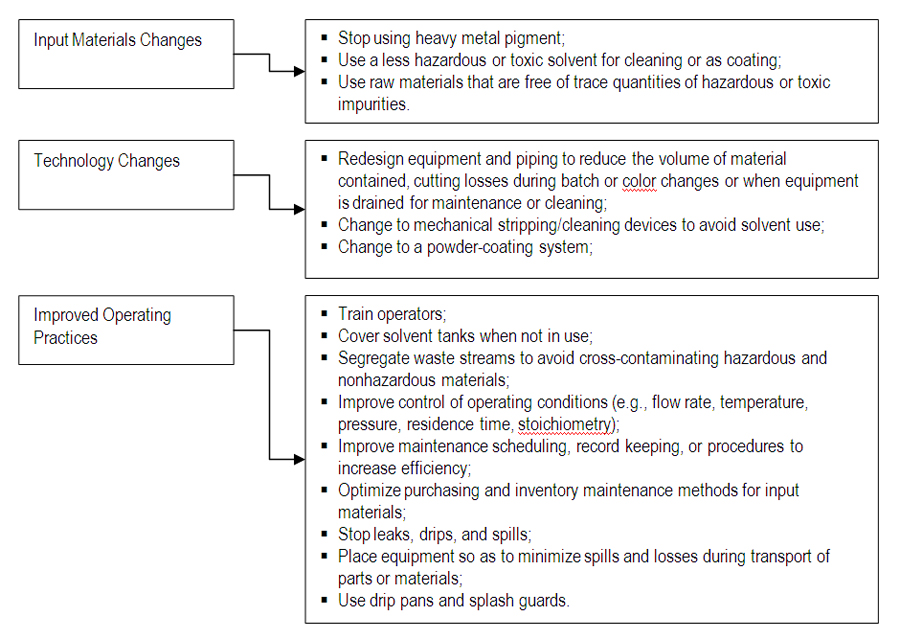

Cleaner Production
Issue Overview
The first and most important step towards mitigating environmental risks is to eliminate or at least reduce pollutants at the source. This can be realized through a variety of means including the substitution of more benign materials for toxic materials in an industrial process, through the use of non toxic cleaning agents or solvents, through the use of water based paints, and the use of non toxic adhesives. Furthermore, many of these sorts of substitutions can be cost effective and result in lower production and operation costs. In addition to material substitution, energy efficiency efforts also result in lower overall pollution levels, lower greenhouse gas emissions, and lower production and operation costs. Energy efficiency efforts may include production process modifications as well as better housekeeping efforts such as more energy efficient lighting fixtures, reduced lighting needs, and energy efficient appliances and equipment such as air conditioners and power generators.
More efficient building design (i.e., green building design) may also reduce the overall energy requirements of an enterprise. Updated equipment may also provide cost effective efficiency in the production process. In the same manner, consideration for water efficiency also reduces the overall pollution and resource profiles for an operation and it's operating costs.
Energy conservation and pollution prevention are complementary activities. That is, actions that conserve energy reduce the quantity of wastes produced by energy-generating processes, and actions that reduce production process wastes lower the expenditure of energy for waste handling and treatment.
Water efficiency measures may include recycling of process water throughout an operation, or harvesting storm water on site and reusing as appropriate at the facility. At present, there are no regulatory requirements for enterprises to develop pollution prevention and energy efficiency programs, and so it is left open to each enterprise to manage themselves.
Best Practice
A pollution prevention and energy efficiency program is an ongoing, comprehensive examination of the operations at a facility with the goal of minimizing all types of waste products and reducing energy needs. Pollution prevention and energy efficiency at industrial facilities can be achieved through conservation of water, developing more efficient energy use, and reducing or eliminating the use of hazardous materials in an industrial process.
Pollution Prevention
Pollution prevention can be achieved through replacing hazardous raw materials or inefficient technologies with the use of environmental friendly chemicals or more efficient technologies.
Pollution Prevention
Pollution prevention can be achieved through replacing hazardous raw materials or inefficient technologies with the use of environmental friendly chemicals or more efficient technologies.

Source: The chart was adopted and modified from IFC Environmental, Health, and Safety Guidelines.
Benefits of cleaner production
Implementation of cleaner production measures at the industrial operation level reduces pollution, waste and risks that are associated with chemicals and hazardous material spills. Adoption of cleaner production in any industrial operations can reduce unit production cost by:

Reduced manpower and equipment requirements for on-site pollution control and treatment;
Less waste storage space, freeing more space for production;
Less pretreatment and packaging prior to disposal;
Smaller quantities treated;
Less need to transport for disposal;
Reduced paperwork and record-keeping requirements.
In addition to economic gain, pollution prevention measures directly contribute to protect and conserve natural resources of the recipient environment. An effective pollution prevention program will thus:
reduce risk of criminal and civil liability;
reduce operating costs;
improve employee morale and participation;
enhance company's image in the community, and
protect public health and the environment.
Recordkeeping
It is important to keep track of baseline pollution levels, their attendant costs, and the savings made through cleaner production programs. Recordkeeping includes:

Baseline data and costs on water, energy and pollution levels (e.g., wastewater, air emissions, hazardous waste, and waste treatment and disposal costs);
Pollution prevention, energy efficiency and cleaner production program measures that have been undertaken (include target goals and objectives and program details);
Program investment costs, capital investments and operation and maintenance costs related to the implemented cleaner production programs;
Measure of resultant cleaner production program savings.